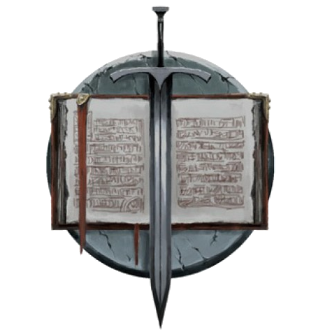
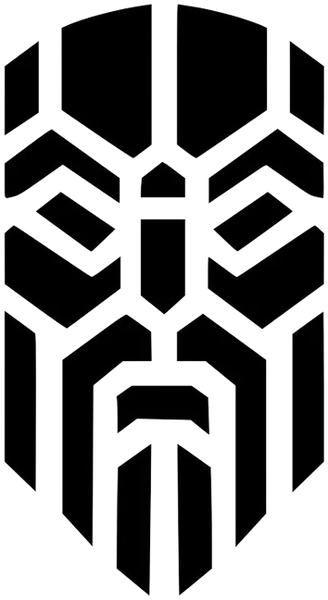
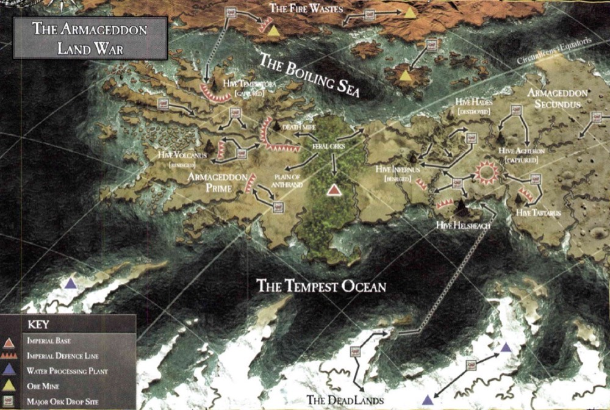

Wars for Armageddon
| Wars for Armageddon | |
|---|---|
| Four invasions of the hive world Armageddon, 444–999.M41 and after | |
 Commissar Sebastian Yarrick, the Old Man of Hades, in a votive painting from the Hive of Tartarus Artwork © Games Workshop | |
| Date | 444.M41 (First War); 941–943.M41 (Second War); 998.M41 to the Era Indomitus (Third War); the Fourth War from the late Era Indomitus |
| Location | Armageddon, Armageddon system, Segmentum Solar |
| Result | First War: Imperial victory. Second War: Imperial victory. Third War: narrow Imperial victory, with the world half ruined and fighting continuing. Fourth War: ongoing |
| Belligerents | |
 Grey Knights (First War) Squat (Second War) |  Daemons of Tzeentch (Third War) Daemons of Tzeentch (Third War) |
| Commanders and leaders | |
| † Killed in action | |
| Units involved | |
| Strength | |
| Casualties and losses | |
| 96 of 109 Grey Knights killed[c] | |
| Billions of civilians killed[f] | |
The Wars for Armageddon are the series of invasions of the hive world Armageddon that have made it the most fought-over planet of the Segmentum Solar. The first, in 444.M41, was a daemonic invasion led by Angron, the Daemon Primarch of the World Eaters, and was ended by the Space Wolves and the Grey Knights. The second, in 941.M41, was an invasion by an Ork Waaagh! under the warlord Ghazghkull Mag Uruk Thraka, and was broken at the cost of two hive cities by a coalition of Space Marine Chapters. The third, in 998.M41, brought Ghazghkull back with the largest Ork host the Imperium had met, and became the largest war in the Segmentum Solar since the Heresy. It was won narrowly, and the fighting on Armageddon has never entirely stopped. A fourth war began later in the Era Indomitus, when Ghazghkull's Orks returned by a new means of travel through the Warp.[1][2]
Armageddon is a Munitorum showpiece in the extent of its sacrifice. Its defenders have been forced to give up cities, a navy, and half a planet to keep it, and it has produced several figures that the Imperium holds up as examples: Commissar Yarrick, who held Hive Hades against Ghazghkull; Princeps Prime Mannheim, who gave his Titan to stop a Gargant host; and Reclusiarch Grimaldus of the Black Templars, who defended Helsreach.[1]
The world
[edit]Armageddon lies in the Armageddon Sector of the Segmentum Solar, about ten thousand light years from Terra. It is a hive world and an industrial world with a population estimated at between a hundred and five hundred billion, and its factories and shipyards supply the crowded worlds of the Segmentum Solar, the heart of mankind's space. The planet's principal continent has two halves, Armageddon Prime in the north and Armageddon Secundus in the south, which are divided by a belt of equatorial jungle. Its hive cities, among them Hades, Helsreach, Tartarus, Infernus, Acheron, Volcanus, Tempestora and Death Mire, stand along the coasts and in the ash wastes. The Fire Wastes lie to the north and the Dead Lands to the south, and are held to be uninhabitable.[1]

First War for Armageddon (444.M41)
[edit]The rebellion and the hulk
[edit]The first war is the least known, and the Inquisition has done much to keep it so. In 444.M41 a Warp storm cut Armageddon off from the Imperium, and in half a dozen hive cities cults of Khorne, exploiting food shortages, rose in rebellion. The Planetary Defence Forces and the Armageddon Steel Legion put down the revolts in Armageddon Secundus but not in the scattered hives of the west of Armageddon Prime, and since the world was far from the Eye of Terror, the Imperium did not suspect Chaos. Then the space hulk Devourer of Stars dropped out of the Warp over the world. On it were Angron, still the Daemon Primarch of the World Eaters, who had spent ten thousand years trying to unify his broken Legion, with World Eaters, millions of cultists, and the twelve greater daemons of Khorne called the Cruor Praetoria. Nearly half the planet's defence forces went over to the invaders.[3]
The Space Wolves and the Grey Knights
[edit]The Space Wolves Great Company of Logan Grimnar was in the sector and arrived quickly. Angron wasted time raising monuments to the Blood God, and when his army emerged from the equatorial jungle it found the Imperial defenders waiting on the rivers Styx and Chaeron. Grimnar had also called for the Grey Knights, the only Chapter that could meet a Daemon Primarch, and when Angron broke the line on the Styx and advanced on Hives Infernus and Helsreach, they teleported into the midst of his army. A brotherhood of 109 Grey Knights fought him. Only thirteen survived. The pyrokine of Squad Castian, Hyperion, struck the final blow, and Angron's spirit was thrown back into the Warp for a hundred years. His army was routed.[3]
The Months of Shame
[edit]The Inquisition's response to the victory caused a second conflict. A conclave of Inquisitors at the planet judged that the existence of Chaos must be hidden at any cost, and voted to quarantine the surviving population in work camps and sterilise it. Grimnar, who thought it a betrayal of the people the Imperium had just saved, tried to evacuate refugees and defenders on transports under Space Wolves escort. The Grey Knights frigate Karabela destroyed the first, the Trident of Ilmatha, with some 400,000 people aboard. The Space Wolves and the Inquisitorial fleet fought in the Armageddon system and later over Fenris, and the Inquisitor Lord Ghesmei Kysnaros was killed. A compromise was reached, and harmony was restored, but the Space Wolves have never again trusted the Inquisition.[3]
Second War for Armageddon (941–943.M41)
[edit]The warlord
[edit]The second war began some nine years earlier, on the Ork world of Urk, where a Boy named Ghazghkull was struck in the skull by a bolter shell fired by a Space Marine raiding party in 932.M41. A Painboy, Mad Dok Grotsnik, replaced the missing portion of his skull with a metal plate. From then on Ghazghkull claimed to speak with the Ork gods, Gork and Mork. He seized control of his tribe in 938.M41, and in 939.M41, when the star of Urk began to die, he persuaded the four other tribes of the world to follow him on a Waaagh! aboard a space hulk that arrived in orbit. In the Warp the hulk's Gellar field failed several times, and the Orks fought off hundreds of daemons, which hardened them.[2]
The invasion
[edit]The hulk, designated Alveus Alpha Alpha Sextus by the Administratum, destroyed the system's defences and struck the planet on the Feast of the Emperor's Ascension in 941.M41. A Warp storm closed around the system and kept relief from reaching it. The planetary governor and Overlord of Armageddon, Herman von Strab, ignored every warning. He banished the commissar Sebastian Yarrick, who had sent a distress call over his objection, to Hive Hades. He ordered a piecemeal defence that fed his troops to the Orks, and relocated his command to Hive Tartarus. When Princeps Prime Kurtiz Mannheim of the Legio Metalica advised him that the Orks would cross the equatorial jungle, von Strab ignored him. The Orks crossed it two days later, and von Strab ordered the Titans to attack. Mannheim, bound by oath to obey, led the Legion against the Ork Gargants, killed one in single combat, and ordered his damaged Titan Steel Hammer to self-destruct, which killed two more and broke the Ork offensive. He was awarded the Emperor's Star posthumously.[2]
Hades, Helsreach and Tartarus
[edit]Without the Titans the Imperial line fell back to the rivers. Hive Infernus surrendered without a fight, and its refugees were herded back as slaves. At Hive Hades, Yarrick organised the defence. He had the great blast gates welded shut, made treaties with the underhive gangs, and put together an army of the hive's citizens. The Orks laid siege and Ghazghkull tried every stratagem: Kommandos dropped on the spires, siege weapons, Gargants fitted with earth-moving gear. For each Yarrick found an answer, sending maintenance crews with bolt pistols into the ventilation shafts to kill the Kommandos and suicide bombers to destroy the siege engines. Von Strab used the last of his family's antique virus bombs, which were mostly corroded or dead.[2]
At Helsreach the defenders used oil tankers to evacuate the population from Grendel's Lock, and the crane drivers of the port welded themselves into their cranes to fight the Gargants. The hive fell when the Orks' Weirdboyz destroyed the minds of its remaining people in a single psychic attack. When the Ork columns marched on Hive Acheron, it seemed to be the last human bastion. Then the Space Marines arrived: Blood Angels under Commander Dante, Salamanders and Ultramarines. Dante took command of all Imperial forces on the world and placed von Strab under arrest. Von Strab fled in a Land Speeder that was later found wrecked, though his body was not.[2]
Dante dropped the Blood Angels behind the Ork lines to take Ghazghkull's headquarters, and missed him, though the assault damaged the Ork spearhead. In the battle to retake Hive Tartarus the Imperial and Ork forces fought hand to hand. When the Orks ran out of food and ammunition they fought with knives and rocks, until the last was dead. Ghazghkull was reported to have been killed, but his body was never found. In the north the Inquisitor Horst, who had won the service of Squat mercenaries on the world of Golgotha, landed with them and forced the Orks back into the jungle. The Space Marines reached Hades, but too late. The Orks had overrun the hive, and Yarrick was found alive among dozens of Ork corpses.[2]
The war was officially over in 943.M41. Fighting in the jungles continued until 961.M41, and the survivors of the Waaagh! degenerated into feral tribes.[2]
Reconstruction
[edit]An inquiry in 948.M41 recommended extensive works. The Navy's sector command was moved to Armageddon, and the dock of Saint Jowen was rebuilt. Three monitor stations were set at the edge of the system, named for Mannheim, Dante and Yarrick. The hives were rebuilt, and the Administratum appointed a military council under General Kurov of the Imperial Guard, a veteran of the Bakkus Crusade, to govern the world. From 949 to 978.M41 Kurov waged xenocidal campaigns against feral Ork bands in the jungle and on the ice world of Chosin. Armageddon rose again, stronger than before, and it was not enough.[1]
Third War for Armageddon (998.M41 onwards)
[edit]The warlord's plan
[edit]Ghazghkull had considered the second war a test. In the fifty-seven years that followed he planned the next from his base in the Golgotha Sector, and tested new methods in a series of small raids. At Buca III in 962.M41 an Ork base hidden in an asteroid destroyed an Imperial outpost. At Chigon 17 in 972.M41 the Orks defeated a garrison with armour in a guerrilla campaign. In 986.M41 the battlecruiser Radiant Way and its escorts were lost, and at Piscina IV the Orks, allied with the Bad Moons warlord Nazdreg, used a teleportation device built by a genius that the Imperium later called Orkimedes. It was a trial. The Dark Angels saved the world.[2]
Ork pirates then attacked worlds near Armageddon, the Navy's convoys were halved, and two dozen worlds were attacked in a day. Task Force Trajan was lost in the Desdena system. General Kurov asked for help.[1]
The invasion
[edit]On the Feast of the Emperor's Ascension in 998.M41, fifty-seven years to the day after the second war, the Ork fleet emerged into the Armageddon system: fifty kroozers, more than three hundred escorts and at least four space hulks. A second report said there were more than two thousand ships and twelve hulks. Admiral Parol, with seven cruiser squadrons from Saint Jowen's Dock, destroyed sixty Ork ships at Pelucidar at no loss, but was outnumbered six to one. The battleship Triumph was crippled by Ork boarders, and the monitor stations Dante, Yarrick and Mannheim were overwhelmed.[1]
On the ground Yarrick arrived on the last transport to reach the world, to the cheers of the population, and took command of the military council from Kurov. Six weeks after reaching the system the Ork fleet attacked the orbital defences, and by the third day Ork landing pods filled the sky. Hive Hades, still half ruined, was destroyed by Ghazghkull's order. Hive Acheron fell five days later to treachery. Herman von Strab, who had not died, had come back with the Orks and been made Overlord of the hive. He was welcomed by much of the old nobility. At Volcanus seventeen garrison regiments were routed. At Death Mire, the Titans of Legios Tempestor and Victorum destroyed an Ork tribe in a three-day battle.[1]
Ghazghkull's plan relied on air superiority and teleportation. The Orks' Roks, asteroid fortresses, landed in the jungle and across both continents and each became a citadel with a teleportation array. Submarines emerged from the poisoned oceans to attack Tempestora and Helsreach. Two Titan Legions fought Ork Gargants for ten days over the Diabolus factory complex, and the Savlar Chem Dogs were wiped out near Infernus. Orks demanded the surrender of Infernus with a blind and handless officer of the regiment as messenger, who carried the message "Surrender or Die!"[1]

The crusades
[edit]More than twenty-five Space Marine Chapters came. High Marshal Helbrecht of the Black Templars brought three crusades and, with the experience of fleet command, fought the Ork armada in the void. The Black Templars' Reclusiarch Grimaldus held Helsreach. Helbrecht's crusade attacked the space hulk Malevolent Dread in a massive boarding action, and the result was bloody. The Salamanders under Tu'Shan, who had fought in the second war, came in nearly full strength. They destroyed nine Roks along the Hemlock River, and under Tu'Shan they fought to rescue the civilians that other commanders were ready to sacrifice. Sergeant V'reth fought beside Grimaldus at Helsreach and defended the helpless. The people of Armageddon remember the Salamanders with more gratitude than any other Chapter. The White Scars, Exorcists, Silver Skulls, Iron Champions and Storm Lords also fought.[1]
Noctis Aeterna and the Season of Blood
[edit]When the Great Rift opened, Armageddon was cut off from all contact for the duration of the Noctis Aeterna. Reinforcements for both sides were lost in the Warp. The combatants on the planet faced waves of daemons, and Orks and humans sometimes fought side by side for a time. When the Astronomican was seen again, a relief force found that the daemonic hosts of Khorne and Tzeentch had been fighting each other on the world. About half the planet had been reshaped into a hellish landscape like a Daemon World. The relief, led by elements of nine Chapters under the Salamanders, stopped a daemonic ritual that would have brought Angron back to the world that had once defeated him, in the campaign called the Season of Blood.[1]
The war ended, in the Administratum's judgment, in a narrow Imperial victory. Ghazghkull left the world during the Season of Fire in his command hulk, and Yarrick followed him with a Black Templar crusade. Herman von Strab was killed in Acheron by a possessed psyker of the 13th Penal Legion, Lieutenant Kage, who overcame the daemon within him long enough to throw them both from a balcony. Orks still hold much of Armageddon, which they regard as a place where a good fight can always be found. They call the war the Big Scrap.[1]
Fourth War for Armageddon
[edit]Some years after Yarrick's reported death, in the Era Indomitus, the planetary governor ordered the evacuation of the remaining Imperial forces, believing that the world could not be held. Yarrick, who was not dead, shot the governor over the vox and ordered that there would be no retreat. A great Ork force had been detected on its way. Ghazghkull's Orks arrived by means of a device that cut tunnels through the Warp, which the Imperium has named the Mega-Tellyshokka, and attacked a defence that was exhausted. Yarrick's astropathic call was answered by more than two dozen Chapters, which formed a coalition for what is called Operation Imperator. The war continues.[4]
Disputed accounts
[edit]The records differ in several details. Some Munitorum records date the Third War to 992.M41, and the Administratum's later reconciliation fixed it at 998.M41. Reports of Ghazghkull's death in the Second War were officially accepted for fifty years, and that error was a cause of the Imperium's unreadiness. Accounts of the First War were sealed by the Inquisition, and survive chiefly in the Space Wolves' records.[1]
Legacy
[edit]Armageddon has given the Imperium a litany of heroes, among them Yarrick, Mannheim and Grimaldus, and a lasting example of what a hive world can be made to endure. The world itself has been transformed by the wars, and several of the old hive cities are ruins. The Munitorum records that the monitor stations named for Mannheim, Dante and Yarrick, and the sector command at Saint Jowen's Dock, were built from the lessons of the second war and proved insufficient in the third. Its people are, in the opinion of the Munitorum, among the most tested in the Segmentum Solar.[1]
Timeline
[edit]The principal dated events of the four wars and of the years between them.
| Date | Event | Theatre |
|---|---|---|
| 444.M41 | A Warp storm cuts Armageddon off; cults of Khorne rise in the hives; the space hulk Devourer of Stars brings Angron and the World Eaters to the world. | Armageddon |
| 444.M41 | The Space Wolves and the Grey Knights defeat Angron on the rivers Styx and Chaeron; Angron is thrown back into the Warp. | Armageddon |
| c. 445.M41 | The Inquisition's conclave orders the quarantine of the survivors; the Trident of Ilmatha is destroyed by the Karabela with some 400,000 people aboard.[g] | Armageddon system |
| 932.M41 | A bolter round strikes the skull of the Ork Boy who becomes Ghazghkull Thraka on Urk. | Urk |
| 939.M41 | Ghazghkull persuades the other tribes of Urk to follow him on a Waaagh! aboard a space hulk. | Urk |
| 941.M41 | The hulk Alveus Alpha Alpha Sextus strikes Armageddon on the Feast of the Emperor's Ascension; Herman von Strab ignores every warning. | Armageddon |
| 941.M41 | Kurtiz Mannheim of the Legio Metalica destroys three Ork Gargants and breaks the offensive with the self-destruct of his Titan Steel Hammer. | Equatorial jungle |
| 941.M41 | Hive Infernus surrenders; Hive Helsreach falls to the Weirdboyz; Sebastian Yarrick holds Hive Hades. | Armageddon Prime |
| 941.M41 | Commander Dante of the Blood Angels arrives with the Salamanders and Ultramarines and takes command of the Imperial forces. | Armageddon |
| 943.M41 | The Second War for Armageddon is officially over; fighting in the jungles continues until 961.M41. | Armageddon |
| 948.M41 | An inquiry recommends the reconstruction of the hives and the sector command. | Armageddon |
| 949–978.M41 | General Kurov conducts xenocidal campaigns against feral Orks in the jungle and on the ice world of Chosin. | Armageddon; Chosin |
| 962.M41 | An Ork base hidden in an asteroid destroys an Imperial outpost at Buca III. | Buca III |
| 972.M41 | Orks defeat a garrison at Chigon 17 in a guerrilla campaign. | Chigon 17 |
| 986.M41 | The battlecruiser Radiant Way is lost; the Orks use a teleportation device at Piscina IV until the Dark Angels save the world. | Piscina IV |
| 998.M41 | The Ork fleet enters the Armageddon system on the Feast of the Emperor's Ascension; Admiral Parol destroys sixty Ork ships at Pelucidar. | Armageddon system |
| 998.M41 | Ghazghkull's orders destroy Hive Hades; Hive Acheron falls to treachery; Herman von Strab returns as Overlord of Acheron. | Armageddon Prime |
| 998.M41 | Helbrecht leads three Black Templars crusades against the Ork armada; Grimaldus holds Helsreach. | Armageddon |
| 999.M41 | The Great Rift opens; the Armageddon system is cut off during the Noctis Aeterna; the Season of Blood reshapes half the planet. | Armageddon |
| c. 999.M41 | Ghazghkull leaves the world in the Season of Fire; Von Strab is killed in Acheron by Lieutenant Kage.[h] | Acheron |
| Era Indomitus | Ghazghkull returns with a new means of travel through the Warp; the Fourth War begins and Operation Imperator is launched by more than two dozen Chapters.[i] | Armageddon |
See also
[edit]

Notes
[edit]- ^ First and Third Wars.
- ^ Third War. The Ork fleet figures are also Third War; the cultist figure is First War.
- ^ First War.
- ^ Estimated; Imperial records give no figure. Counted across four wars.
- ^ For a century (First War).
- ^ Estimated; Imperial records give no figure. Counted across four wars. The hive cities of Hades, Helsreach, Tempestora and Infernus were ruined or destroyed. About 400,000 refugees were lost with the Trident of Ilmatha. About half the planet was reshaped into a Daemon World landscape.
- ^ Estimated; no record gives an exact year.
- ^ Estimated; no record gives an exact year.
- ^ Date not recorded; the Fourth War is placed in the late Era Indomitus.
References
[edit]- ^ a b c d e f g h i j k l m I Am Slaughter - The Beast Arises, Book 1 (novel) by Dan Abnett. Predator, Prey - The Beast Arises, Book 2 (novel) by Rob Sanders.
- ^ a b c d e f g h The Emperor Expects - The Beast Arises, Book 3 (novel) by Gav Thorpe. The Last Wall - The Beast Arises, Book 4 (novel) by David Annandale.
- ^ a b c Throneworld - The Beast Arises, Book 5 (novel) by Guy Haley. Echoes of the Long War - The Beast Arises, Book 6 (novel) by David Guymer.
- ^ The Hunt for Vulkan - The Beast Arises, Book 7 (novel) by David Annandale. The Beast Must Die - The Beast Arises, Book 8 (novel) by Gav Thorpe.